|
|
|
|
|
|
|
|
Click the Scale icon in the Graphical Objects toolbar, then click the Scale arrow to select one of the following styles from the Scale list.
Vertical Scale: Displays a vertical scale defined by a grid of horizontal lines.
Horizontal Scale: Displays a horizontal scale defined by a grid of vertical lines.
Circular Scale: Displays a scale in circular form.
If you want, you can change your selection in the Shape field of the scale properties.
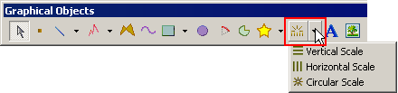
Click the panel to set the vertical or horizontal scale's start point.
Click the panel a second time to set the scale's diagonally opposite end point. Continue clicking on the panel to place as many scales as needed.
The following image is an example of a vertical scale.
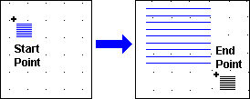
Right-click the panel to exit the drawing mode. The last object drawn will become selected.
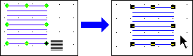
A circular scale marks a grid around the segment of a circle's circumference. Click the panel to set the start point of the circular scale's selection box.
Click the panel a second time to set the circular scale's outer circumference and the diagonally opposite end point of the circular scale's selection box. The circle to define the circular scale's inner circumference is now available.
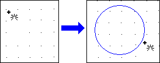
Move the Circular Scale tool to a point inside the circumference of the outer circle, and click the panel to define the depth of the circular scale—from the outer circle to the inner circle. A line segmenting the circular scale from the center to the outer circumference appears.
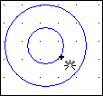
Draw the circular scale clockwise. Click the panel at an angle that intersects the circular scale—once to set the start point, and again to set the end point. Continue clicking on the panel to place as many circular scales as needed.
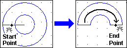
Pressing the CTRL key while defining the circular scale's start or end points will segment the circular scale at 45-degree angle increments.
Right-click the panel to exit the drawing mode. The last object drawn will become selected.
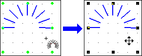
Modify the attributes of this circular scale in the Property Inspector.
The following table describes the Scale's properties.
|
Property |
Description |
|
Name |
The object's name. Whenever an object is created, a default name is generated. When renaming an object, its name must be unique within the target, must contain no more than 32 valid characters, and must follow the naming conventions. For details, see Appendix 9, Naming Conventions. |
|
Top |
The coordinates, in pixels, of the top-left corner of the object.
By changing these properties, the graphical object can be moved up, down, left, and right.
|
|
Left |
|
|
Width |
The width and height of the object's selection box can be set from 1 to 3000 pixels. |
|
Height |
|
|
Back Color |
The object's background and line colors. LineColor is the color of the object itself, and BackColor is the color of the object's background layer when the LineStyle property is set up with a pattern other than Solid or Invisible. When the LineStyle property is set to either Solid or Invisible, the color of the object's background layer will not be displayed. For more information, see Sections 7.3.1, Color Palette, 7.3.2, RGB Values, and 7.3.3, Previewing Colors for Target Machines. |
|
Line Color |
|
|
HW Back Blink |
The object's BackColor and LineColor blink speeds. The default setting is [No] for no blink, or [Fast], [Medium], or [Slow] to set the property's blink speed. These properties are displayed only when the TargetColor property is set to blink. For details about the blink feature, see Section 7.3.4, Blink Feature. |
|
HW Line Blink |
|
|
Line Style |
The object's line style. |
|
Line Width |
The width of the object's lines, from 1 to 9 pixels when the LineStyle property is set to either Solid or Invisible. Must be set to a 1-pixel width when LineStyle is set to a pattern other than Solid or Invisible. |
|
NumOfDivisions |
The number of lines that equally segment the object's area, as determined by its Shape. |
|
Shape |
The style of the object's shape—Vertical, Horizontal, or Circular. |
|
Animation |
The ellipsis button For details, see Chapter 8, Animating Graphics.
|
|
Save Defaults |
The forward-arrow button |
|
Restore Defaults |
The back-arrow button |
|
Placeholder |
You can assign a placeholder in any property that requires a variable definition. Click the ellipsis to open the Placeholders dialog box and edit the variable placeholder for the object. The dialog box only displays if you had set up a placeholder for the object. For more information on placeholders, see Section 21.2.4, Working with Variable Placeholders. |
Click the Scale to display its selection box and eight handles—one handle at the top, bottom, both sides, and at each corner.
When hovered over the scale, the Select tool will display as a crossed double arrow .
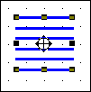
Hover the Select tool over one of the scale's eight handles to display a double-headed arrow, then click and drag the handle to change the scale's dimensions.
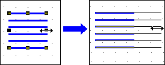
Click the panel to set the change.
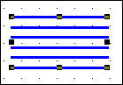
Click the Scale to display its selection box and eight handles—one handle at the top, bottom, both sides, and at each corner.
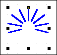
Hover the Select tool over the scale to display a crossed double arrow , then click the scale a second time to display its eight nodes—six end point nodes (three nodes at either end point), and two center point nodes.
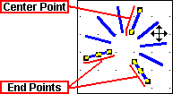
Hover the Select tool over one of the scale's nodes to display a cross symbol +, then click and drag the node to adjust the scale's dimensions.
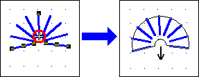
To modify the size or length of the scale's outer circumference, click and drag either end point's outer node.
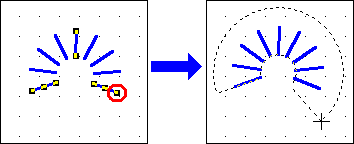
To modify only the size of the scale's outer circumference, click and drag the center point's outer node.
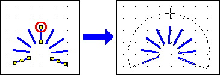
To modify the size or length of the scale's inner circumference, click and drag either end point's inner node.
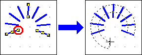
To modify only the size of the scale's inner circumference, click and drag the center point's inner node.
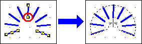
To modify only the length of the circumference (the scale's range), click and drag either end point's center node.
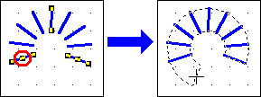
Click the panel outside the scale's selection box to set the change.
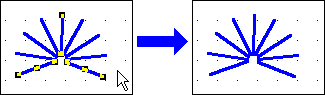